Pet Pulse
All paper records, scattered digital files, and pet health information can be consolidated into a single app with Pet Pulse. The initial prompt was to create an integrated platform to simplify healthcare for pet owners. Through rigorous research and analysis, our team informed the design and development of an interactive prototype facilitating seamless management of pet healthcare records and appointments. This user-centered approach ensures that our solution meets the diverse needs of pet owners while enhancing accessibility to vital veterinary services.
Award: Best Overall Design
Timeline
To ensure our project's deadline, our team mapped out the design process to help keep track of our progress.
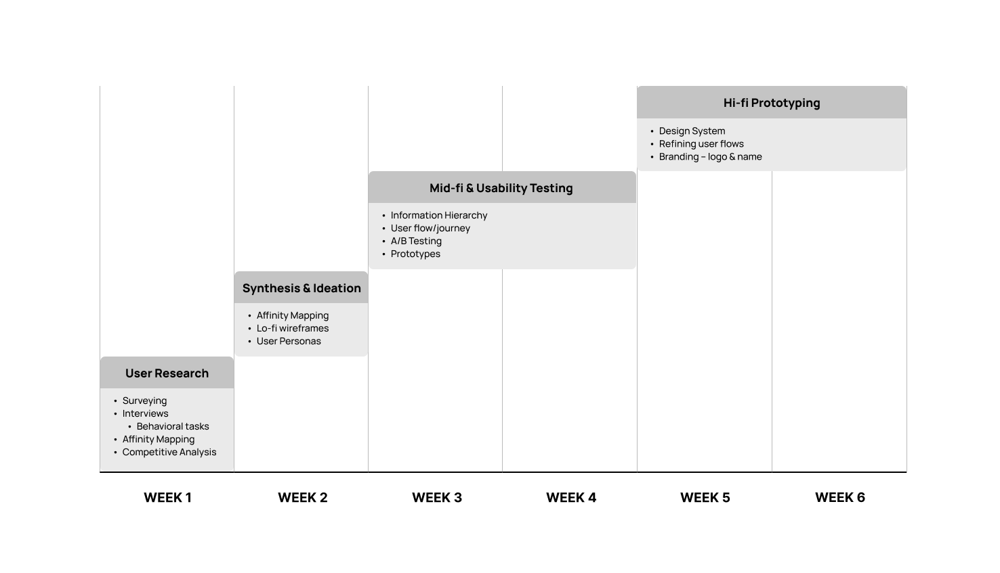
User Research
Our team employed a multi-faceted approach to gather insights into the challenges faced by pet owners in managing pet healthcare.
Research Goals
Our primary goals were to:
- Identify user pain points in managing pet healthcare
- Understand user preferences and behaviors in utilizing digital platforms for pet healthcare
- Develop design principles for an intuitive and user-friendly interface
We began with a thorough literature review to understand existing research on pet healthcare and identify common user pain points. Subsequently, we conducted brainstorming sessions and affinity mapping exercises to formulate targeted research questions.
Competitive Analysis
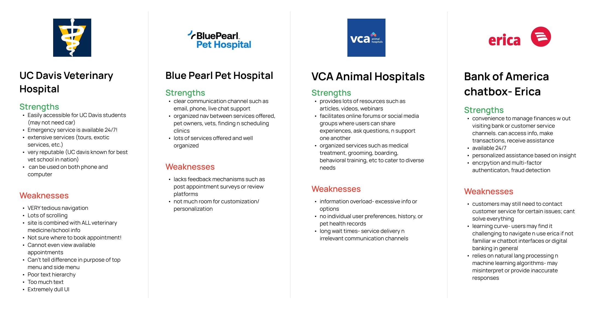
To collect data, we distributed surveys to 50 pet owners and conducted in-depth interviews with 8 participants. During these interviews, participants were given behavioral tasks navigating the UC Davis Vet Hospital website to observe their processes in making appointments and accessing pet health information.
Survey says...
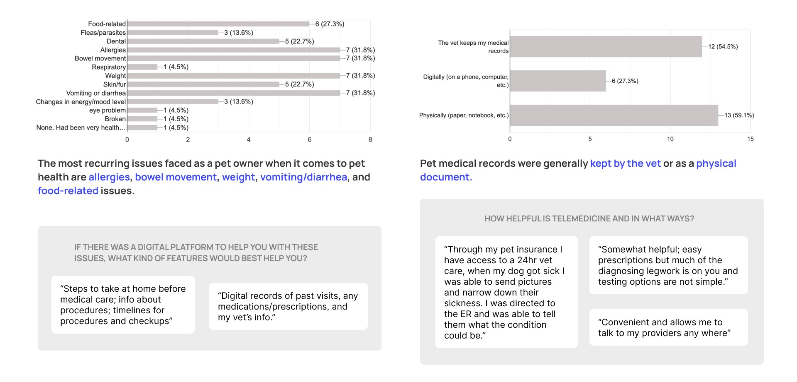
Hard Data Obtained
From our surveys and interviews, we gathered quantitative and qualitative data on several key metrics:
- Percentage of pet owners struggling with medical record keeping
- Preference percentages between telemedicine and physical check-ups
- User satisfaction ratings and pain points regarding current veterinary interfaces
Key Takeaways
- User Pain Points: Identified significant challenges including difficulties in record keeping, variations in experience between telemedicine and physical visits, and complexities in accessing pet healthcare information.
- Design Priorities: Emphasized the importance of creating a streamlined interface that minimizes sensory overload and enhances usability for users of varying ages and technical proficiencies.
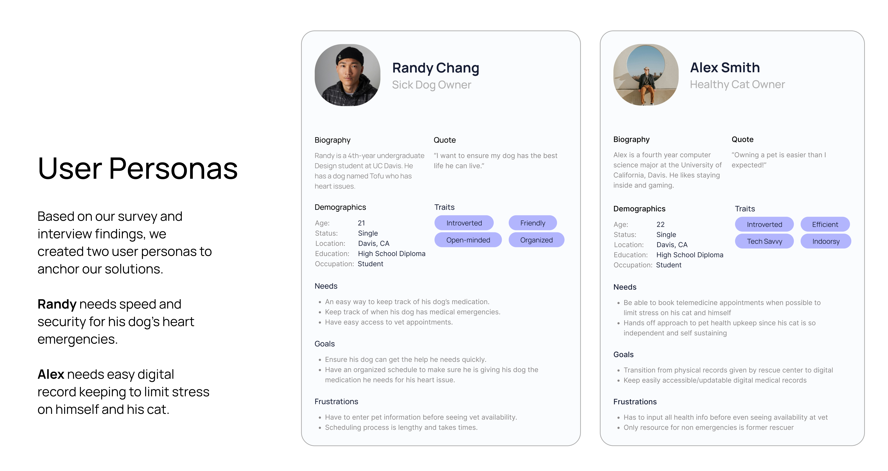
Demographic Makeup
Participants in our research varied in terms of age, occupation, educational background, and pet ownership demographics. This diversity allowed us to capture a broad spectrum of perspectives and tailor our design solutions accordingly.
Ideation
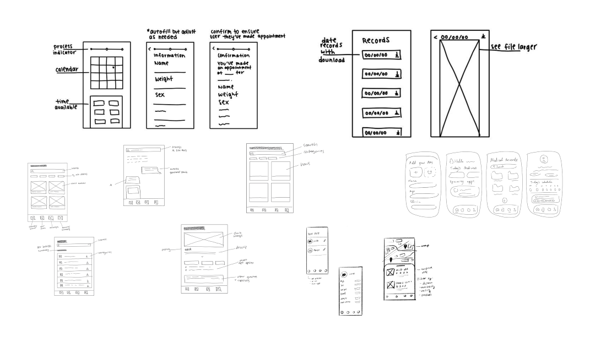
Sketches
With ideas surrounding decreasing stress and increasing efficiency in pet healthcare, we created sketches of potential screens for record keeping, clinic finding, appointment scheduling, pet profile editing, and vet messaging.
✋ Pause!
Pet health is a broad topic, and there was difficulty narrowing down the direction we wanted the app to go in. After much discussion, we changed our original How Might We Statement to fit the findings of the surveys and interviews more. Key features like record keeping, appointment scheduling, and vet messaging made it to later iterations - however, we decided to reduce our focus on the clinic finding aspect, as we felt that kind of research was not central to our app's purpose. Another simplification included consolidating pet profile editing to the home page alongside important notifications.
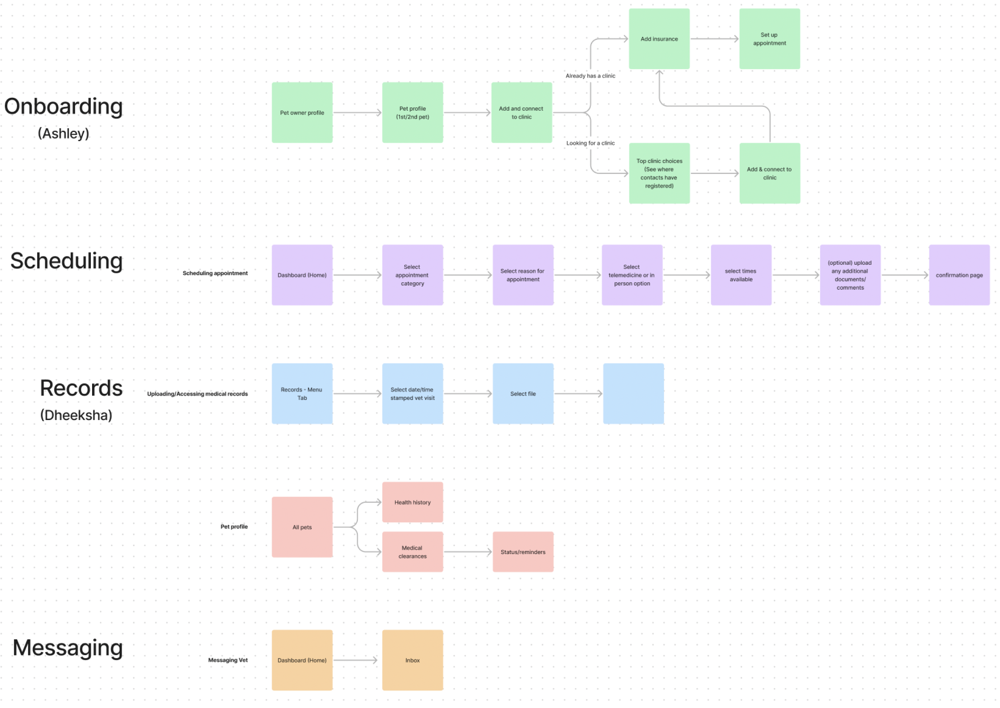
Task Flows
From our surveys and interviews, we were able to pinpoint several key goals to center our user flows around. We wanted to reduce how much pet owners have to manually input data before scheduling appointments, so that step is easily completed in onboarding and pet profile editing. That way, emergency appointments, reschedules, and cancellations can be done in minutes with autofilled info.
To boost transparency and communication between pet owner and their vets, medical files tracking conditions, lab results, vaccinations, and more can be uploaded and organized in records. Any other questions, comments, and concerns can be addressed directly in messages accessible from the home screen. With these key features in mind, we split our app into onboarding and three main pages, including a centralized home page, medical records, and appointments.
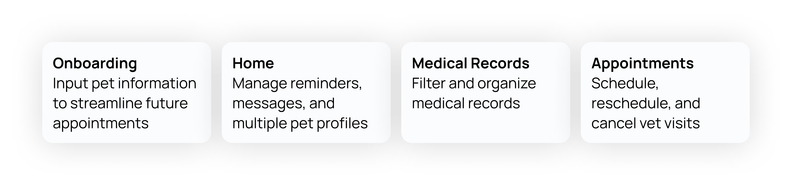
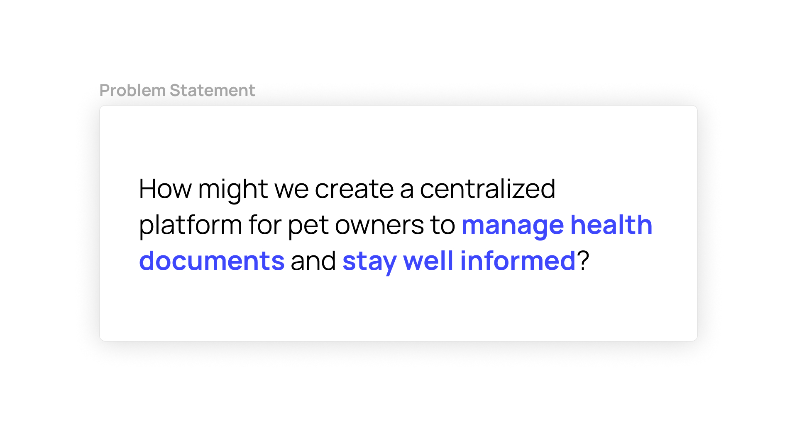
Mid-fi Prototyping
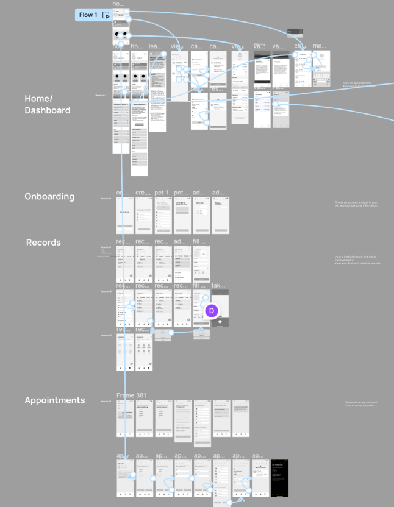
Sketches to Figma
To visualize the features and elements needed to address the problem, we worked through our sketches in Figma. We created and included:
Usability Testing
For usability testing, we wanted to analyze any pain points and the overall user experience of the following tasks:
- Complete onboarding process
- View, reschedule, and cancel appointments
- View vaccinations
- View and add medical records of specific pets
We conducted 8 usability tests, with all of the participants being students, ages 19-22. From these tests we learned:
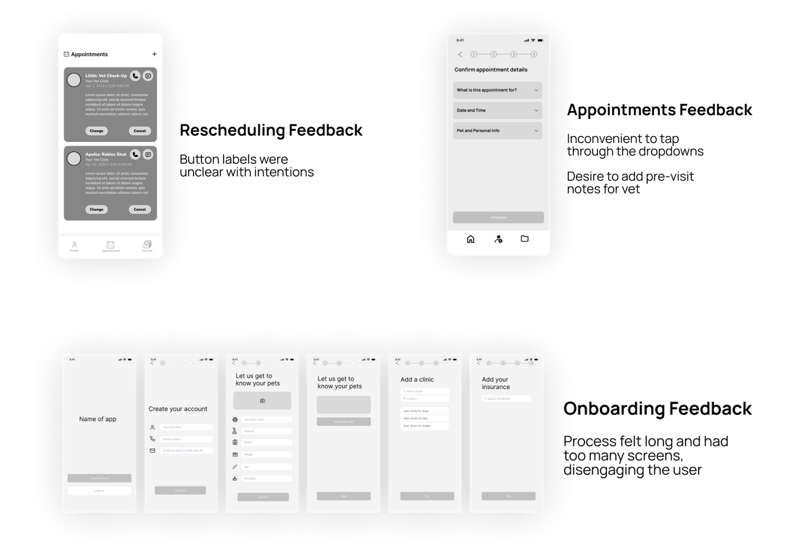
A/B Testing
After implementing changes in our prototype to reflect our findings from usability testing, we wanted to understand user preferences on the following features:
- Viewing a particular medical record
- Rescheduling/canceling an appointment
- Placement pop-up for additional vaccine information
We conducted A/B Testing with 11 participants by having them vote between different visual representations for each of these tasks and implemented their feedback into our final design.
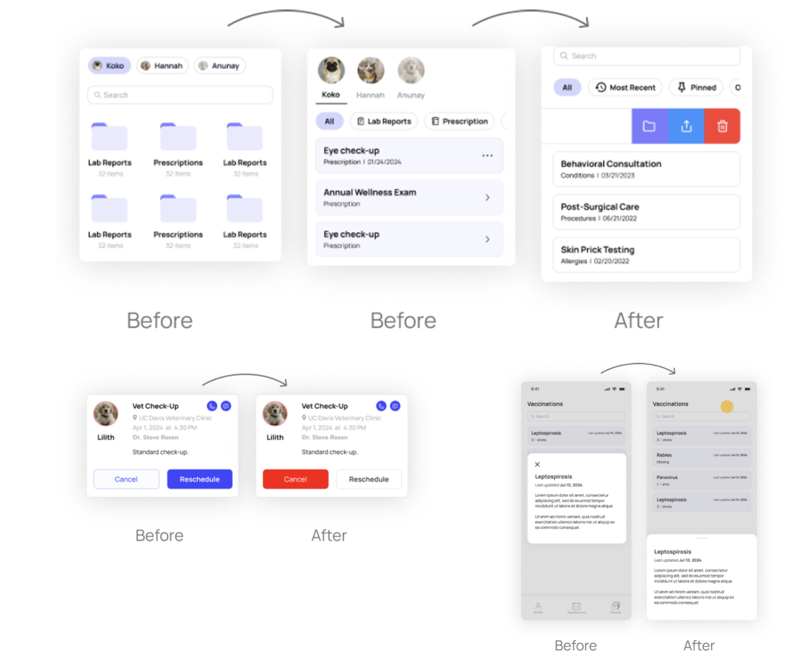
Implementing Usability Testing Findings into the Prototype
Incorporating usability testing findings into the prototype was a critical step in ensuring our design met the needs and preferences of pet owners. Some of the findings included preferences for button placement, readability concerns with login screens, and the desire for a minimalistic yet professional aesthetic.
Transitioning from Mid-fi to Hi-fi
The mid-fi prototypes provided a foundational understanding of user flows and interaction patterns. As we progressed to hi-fi prototypes, our focus shifted to refining visual details, ensuring consistency across design elements, and enhancing the overall aesthetic appeal and usability of the app.
The biggest difference in transitioning to hi-fi prototypes was the level of detail and fidelity in design elements. We implemented the same components, colors, alignments, and typography styles across all screens to maintain visual coherence and reinforce brand identity. This consistency was crucial in establishing a unified user experience and reinforcing the professional image of the app.
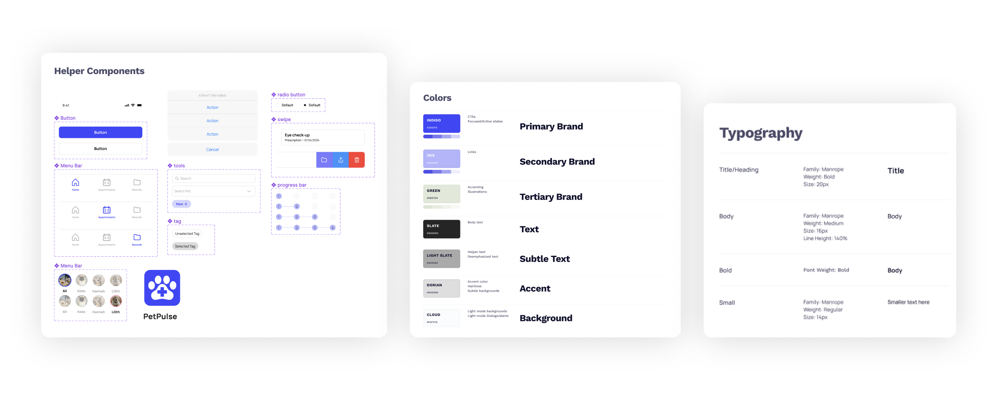
Creating the Design System
Our design system was developed based on a thorough understanding of user preferences, usability principles, and industry standards. We chose a color palette predominantly influenced by medical affiliations, utilizing shades of blue to convey trust and professionalism. This choice was inspired by successful medical institutions like Kaiser Permanente and UCSF, which use blue as a primary color.
Additionally, we embraced a minimalist approach to reduce visual clutter and cognitive load. Accent colors were strategically employed to highlight actionable elements such as buttons, ensuring intuitive navigation and clear visual hierarchy. The incorporation of off-white tones further contributed to a softer, less straining brightness level for prolonged use.
High Fidelity Prototyping
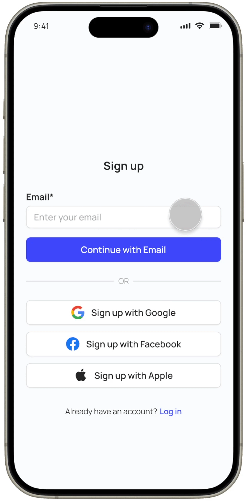
Onboarding
- Sign up and create an account to link to the veterinary clinics
- Enter in your pet information to autofill for later appointments
- Connect a clinic and pet insurance to your account (optional)

Home Screen
- View all upcoming appointments and schedule new ones
- View pet profile with up-to-date diagnosis, prescriptions, vaccinations, and surgeries/procedures
- Contact primary pet healthcare providers

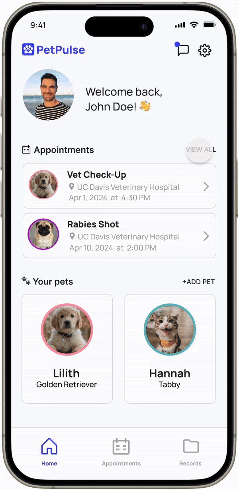
Appointments
- View all upcoming appointments and schedule new ones
- Date and time picker with transparent view of vet availability
- Auto-filled pet and personal information for streamlined scheduling process
- Reschedule and cancel previously made appointments
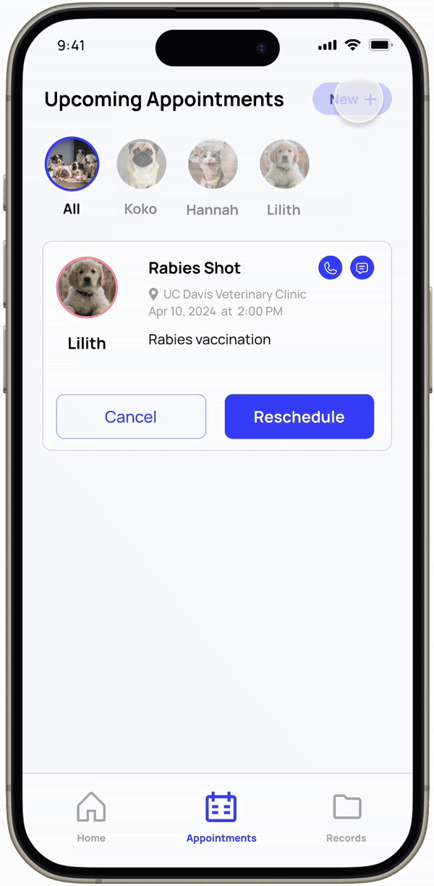

Medical Records
- Easily locate, sort, and manage medical records
- Add medical records for specific pets for quick communication between veterinarian and pet owner
Presentation day!

Presentation day was a whirlwind of emotions: relief for being done but sadness for letting go of such a powerful quarter. Seeing not just our team but all of the cohorts dressed up and antsy in their seats was like a scene from a movie, this was a day we never really imagined reaching.
We were judged by Neha Deshmukh, a UX Designer at Amazon. Her feedback was incredibly valuable, emphasizing our research strengths and guiding us to refine problem definition when implementing educational aspects of the app.